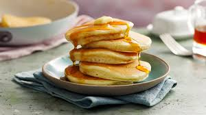

INGREDIENTS
These are the ingredients needed to make pancakes.
- Flour
- Eggs
- Nutmeg
- Milk
- Sugar
- Butter
- Mapple syrup
STEPS
These are the steps involved in making the pancake dish.
- Get a bowl and pour about 2 to 3 scoops of flour into it.
- Break an egg into the flour in the bowl.
- Add about half a cup of milk to the mix
- Add about 2 teaspoons of sugar to the mix.
- Add some nutmeg to the mix(if you want to).
- Add water to the mix and stir it until you get a semi-solid mix(The more water you add the lighter the mix becomes).
- Get a pan and heat it on a stove.
- Now you get a paintbrush-like utensil and use it to getnly coated the inner surface of the pan with melted butter or rather melt the butter on the heated surface and coat it.
- Use a scoop spoon to pour the mix on the pan and let it cook on low heat until the mix turns golden brown after which you flip it onto the other side and let it cook until golden brown.
- Repeat the same process in the step above until the mix is finished.
- Serve your pancakes on a plate and drizzle mapple syrup on your pancakes. Your dish is ready!

Back
Homepage